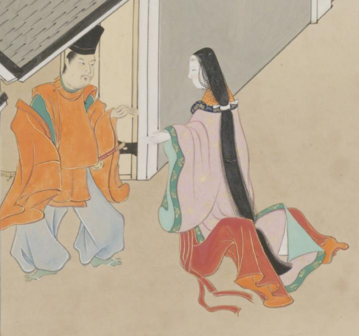

桃色の袿姿で緋袴をはき裙帯を垂らした女。詞書には女について「はたちあまりの女しやうたゝ壱人たゝすミゐたり其かたちをみるにようかんひれいにしてあたりもかゝやくほとなりかミのかゝりうるはしうつなかり此世の人とハ思はれすあやしさハかきりなし」と説明されている。
著作者：英一蝶／出典：親書誌：U426_nichibunken_0094：田原藤太秀郷；タワラトウタヒデサト／日付：2008／資源識別子：U426_nichibunken_0094_0002_0000
Copyright (c)2010- International Research Center for Japanese Studies, Kyoto, Japan. All rights reserved.